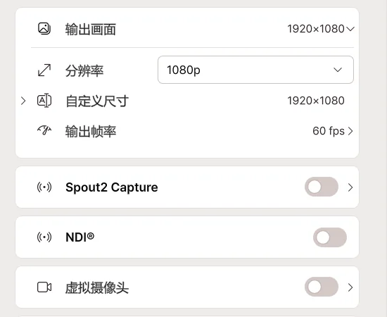
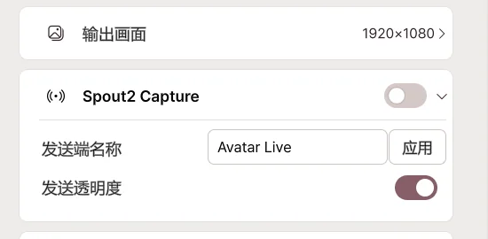
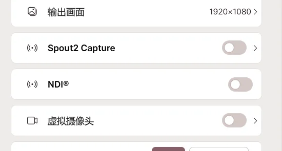
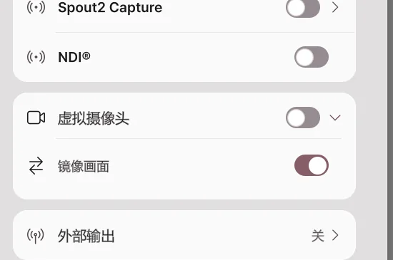
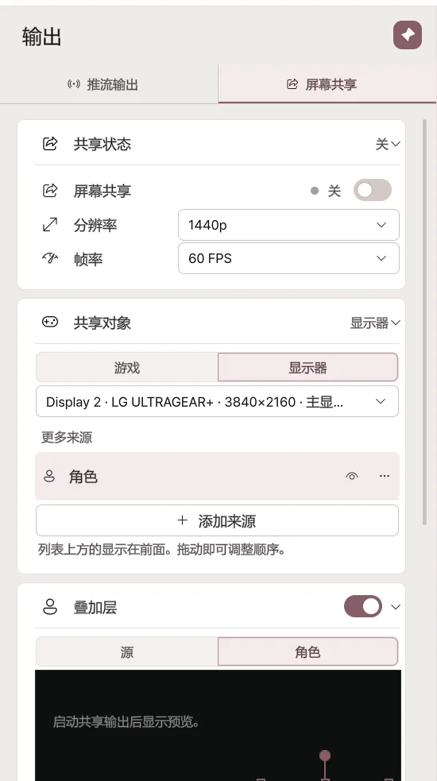

输出
将完成的角色画面发送到 OBS、Discord、Zoom，或保存为照片、视频。
应该使用哪种方式？
| 想要的东西 | 可使用的功能 |
|---|---|
| 在这台电脑的 OBS 中添加透明角色 | Spout2 |
| 将视频发送到其他电脑 | NDI® |
| 用视频通话的摄像头显示 | 虚拟摄像头 |
| 共享游戏和角色 | 屏幕共享 |
| 与朋友的角色一起直播 | 远程合播（直播 → 连接） |
| 创建照片·视频文件 | 照片与录制（工作室 → 照片与录制） |
NDI®是Vizrt NDI AB的注册商标。NDI 官方指南
推流输出
输出图片

| 项目 | 更换时 |
|---|---|
| 分辨率 | 提高会更清晰，同时增加电脑负担。 |
| FPS | 提高后动作更流畅，但会增加电脑和网络负担。 |
| 屏幕比例 | 改变播出的画面形状，例如横向或纵向。 |
| 传输对象 | 发送工作场景视图或所选工作室摄像机的视频。 |
Basic支持最高1080p并带水印，Pro支持最高4K并且无水印输出。
Spout2
在同一台 Windows PC 上将 Avatar Live 的视频传输到 OBS。

- 关闭 OBS 并安装 OBS Spout2 插件。
- 重新运行 OBS。
- 打开 Avatar Live 的输出 → 传输 → Spout2。
- 在 OBS 的源 → + → 在 Spout2 Capture 中选择 Avatar Live。
- 要使用透明背景，请在工作室 → 背景 → 选择透明，然后在 OBS 中开启使用 alpha 合成。
| 项目 | 做的事情 |
|---|---|
| Spout2 开关 | 发送或停止视频。 |
| 发送名称 | 在 OBS 源列表中显示的名称。 |
| 应用 | 确认已更改的发送名称。在 OBS 中也请重新选择新名称。 |
| 发送 Alpha | 也会发送背景透明度。 |
Spout2和OBS接收插件的使用条件遵循Spout2通知。
NDI
通过网络将视频发送到其他电脑的 OBS 等软件。Basic 和 Pro 都支持。

- 关闭接收电脑的OBS。
- 安装 DistroAV 以及该版本所需的 NDI Runtime。
- 在 Avatar Live 中开启输出 → 传输 → NDI。
- 在接收 OBS 的源 → + → NDI Source 中选择 Avatar Live。
如果想在没有 OBS 的情况下进行确认，可以使用 NDI Tools 的 Studio Monitor。发送电脑和接收电脑必须处于可以相互通信的网络中。
NDI Runtime·NDI Tools·DistroAV 的使用条件请分别在 NDI 通知 中确认。
虚拟相机
这是在 Discord、Zoom 等的摄像头列表中选择角色的方式。

- 通过安装虚拟摄像头注册设备。需要 Windows 管理员权限。
- 打开虚拟摄像头开关。
- 在要使用的应用程序的相机列表中选择 Avatar Live Camera。
最大1920×1080，30fps，并且不传递透明背景。如果列表中没有新设备，请重新启动接收应用程序。
屏幕共享
将角色覆盖在游戏或程序上，然后通过 Discord 等发送。

- 输出 → 打开屏幕共享。
- 选择游戏或显示内容，并选择要共享的对象。
- 调整角色的位置和大小后，开启屏幕共享。
- 在 Discord 中共享屏幕 → 在应用程序中选择 Avatar Live Share 输出。
| 调节 | 变化的事物 |
|---|---|
| 角色位置·大小 | 更改放置在游戏上的角色的位置和大小。 |
| 音频目标 | 从游戏、桌面或所选应用中选择要共享的声音。 |
| 应用音量 | 改变被共享方的声音大小。0%为静音，100%为原始大小。 |
| 额外来源 (Pro) | 可以在其他窗口或显示器上叠加更多内容。列表上方的来源会显示在前面。 |
当共享声音没有声音时
如果出现没有虚拟音频设备的提示，可以使用虚拟音频驱动程序安装。此按钮是安装VB-Audio的VB-CABLE的路径。安装后，请确认Windows的默认播放设备是您平时使用的耳机或扬声器。
VB-CABLE是由独立厂商制作的Donationware。使用条件和赞助·许可说明可在 VB-CABLE 通知 中查看。